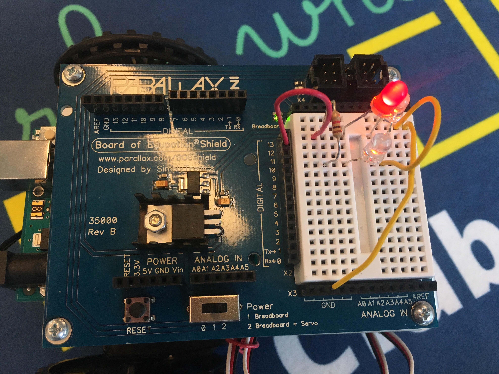
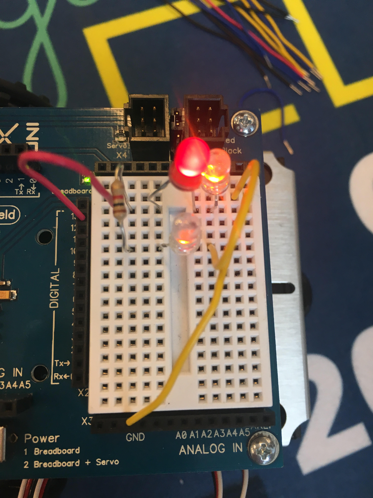

Hi there! Nice to meet you! I'm Christina Low, a 17 year-old rising senior living in Queens, New York City. I am a Malaysian- American who is passionate in changing society for the better.
Singing, diving into another world through books, drawing, capturing memories through photography, eating food, bowling, tumblr
- Based on what I've learned so far, some similarities between Python and Scratch are that there are similar functions, for instance a function that repeats commands forever. However, unlike Scracth, Python uses different names (the function to repeat something forever is called "While True"). Additionally, the code is in lines rather than blocks. This makes it harder to visualize the specific commands. One upside of using Python, though, is that when an error results, it is easy to figure out what is wrong with the code. Python will tell us what kind of error it is and where the error is located. In Scratch, we had to keep on guessing and playing around to fix to error.
- Today, we spent some time to debug our program. It felt new and interesting, seeing how Scratch and Python were connected and seeing a different way of doing the same "Draw Shapes" project. It was somewhat hard as it took some time to get used to the new commands.
- Today, we learned about data structures. A list is one kind of data structure that stores data. Lists are not limited to one data type and can include strings, integers, and floats. They are useful since instead of going through every element in the list and doing a command to each one, you can do a command to the entire list. For instance, today we used a list of pixels from an image and recolored them based on the total RGB value. Instead of going through each value, we recolored a range of numbers.
- Today, I worked with Hannah. I think we worked well together, finding different colors and filters, and asking each other questions when we got stuck. I have worked with various partners this week and it reminded me of the four communication styles we had a speaker come to talk to us about. It's interesting to see how people of different communication styles work together. As an idea-centered person, I think I work best with other idea-centered people as well as processing-centered people.
- Today, we made several filters similar in style to the Obama HOPE poster. These included the same one that Obama used, one that incorporated dark green, orange, purple, and taupe, a monochrome filter, a distorted filter (we took out the equal signs in the if statements of pixels to achieve this effect), as well as a negative filter. One challenge we faced while making the filters was getting the code right. For instance, for the monochrome filter, we added another range of intensities and I struggled with getting the right range. Hannah was able to help me fix it.
- I used the four elements of the core4 throughout the project. I used variables for each color I was going to incorporate in the filter. It helped to identify each color, rather than using the RBG value continuously. I also used a for if loop for each pixel in the list taken from the image. Additionally, I used conditionals to recolor each pixel depending on the range of intensity.
- If I had more time, I would attempt to make filters similar to the ones on Snapchat.
- A highlight of today was the list challenge, since it was first confusing but ended up being fun and creative.
- Today we worked on our robot and were able to make it light up three LED lights! We did this by making a parallel circuit as well as a series circuit inside one of the paths in the parallel one. Therefore, when we remove the red light, the white light adjacent to it would not light up, while the one underneath it still would. If we remove the white light on the bottom, both the red and white light on the upper path would still connect and light up. This took a while to achieve and some challenges I faced were having the drawing of the layout of our circuit to match what was on the breadboard. It took some time to understand the similarities and differences. For instance, in the breadboard, the rows across are already connected, Positioning and placement is imperative and one little thing can mean the difference between success and failure. Additionally, another difference is that the "battery" in our drawing would be the same as the ground on the breadboard. Overall, I learned a lot today and I'm proud of myself for getting them to light up.


- Manuella Veleso's work and Ayanna Howard's work are similar since they both created robots in order to impact the world. Howard created a robot to help disabled kids in communicating what they felt. She also made Mars rovers. Veleso co-founded the RoboCup Federation, which is well known in the A.I. community and a guiding force.
- We worked together on the lightshow by one part of the group working on the code while the other worked on finding the beats of the song, "Take on Me." We also worked together in coming up with ideas for our project, deciding to have the lights light up in sync with the chorus of the song, as well as signing off with "GWC" in Morse Code. We could have improved by figuring out how to change the color of the lights, as it was something we wanted to but had trouble with.
- Other groups had different approaches to this project, for instance, getting multiple lights to light up at once, or for one light to light up at a time.
- Basic pieces of every Arduino sketch are the setup and the loop.
- Something about circuits that I didn't know before is the similarities and differences of making them in Physics class and in Arduino using the breadboard.
- My favorite part of my robot's dance was the various turns it made when Rihanna sang "you" repeatedly. It was fun to code and to watch.
- The kind of outputs that Manuella Veleso and Ayanna Howard had for their robots are movement sensors, conditionals, and movements the robot does when kicking the ball.
Email: christina511ny@gmail.com